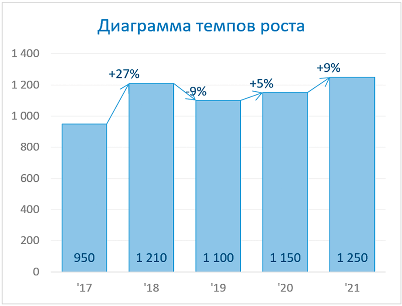
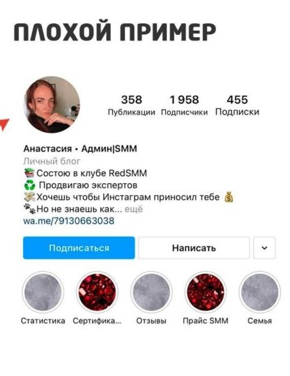
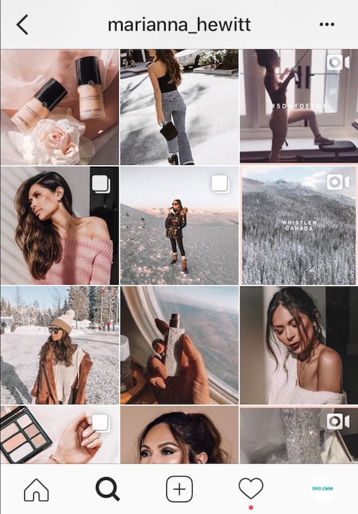

Выберите кейс
Успешная кампания для бренда
Клиент: Бренд XYZ
Запрос: Увеличение вовлеченности и продаж через соцсети.
Методика работы
1. Исследование рынка
Проанализировали целевую аудиторию, изучили конкурентов и выявили ключевые особенности рынка.
2. Создание стратегии
Разработали контент-стратегию, выбрали ключевые каналы для продвижения и оптимизировали контент для вовлеченности.
3. Реализация
Запустили рекламные кампании, отслеживали эффективность и корректировали стратегию по ходу работы.
Результат
График роста вовлеченности
До
После
Отзыв клиента
«Это была невероятная работа, наша аудитория выросла в три раза!»
Хочу такой же результат